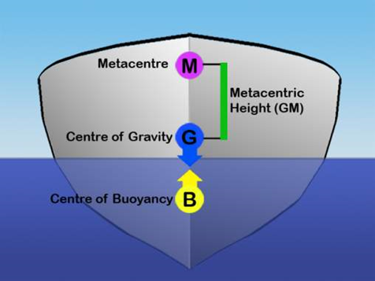

Metacentre is the theoretical point at which an imaginary vertical line passing through the centre of buoyancy
and centre of gravity intersects the imaginary vertical line through a new centre of buoyancy created when the body
is displaced, or tipped, in the water, however little.

Theory
 The centre of buoyancy of a floating body is the point about which all the body parts exactly buoy each other—in other words, the effective centre of the displaced water. The metacentre remains directly above the centre of buoyancy regardless of the tilt of a floating body, such as a ship. When at rest on even keel, the vessel’s centre of buoyancy is directly below the centre of gravity as well as below the metacentre. (The centre of gravity is the point in a body about which all parts of the body balance each other.) When a vessel tilts, one side displaces more water than does the other, and the centre of buoyancy moves and is no longer directly under the centre of gravity, but, regardless of the amount of the tilt, the centre of buoyancy remains directl below the metacentre. If the metacentre is above the centre of gravity, buoyancy restores stability when the ship tilts. The stability increases with the distance between metacentre and centre of gravity , called the metacentric height. If the metacentre is below the centre of gravity, the boat is unstable, and a tilt results in capsizing.

2.Put the floating body inthe vessel and note the level of water.
3.Calculate the weight of floating body from the principle,weight of
the body equal to weight of displaced liquid.
4.Adjust the pointer on zero in the protractor.
5.Put a small weight in the grams on the hanger provided on any side.
6.Note the distance of hanger from the Metacentre.
7.Note also the tilt shown by pointer in the protractor.
8.Calculate metacentric height by using formula.
Metacentric height=w*x/(w+W)tan

Simulator for the Experiment
click here for simulation
1. Mechanism of material removal in EDM machine is
2. In EDM, the spark gap is kept between _____mm to _____mm.
3. The electric discharge machining is ________
4. Which of the following is true for Electric Discharge Machining (EDM)?
i. The metal removal takes place due to erosion.
ii. Any electrical conductor can be machined by this method.
iii. Some light oil like transformer oil or keroscene oil is used as dielectric.
5. In EDM, electrode polarity depends up on which of the following components?
6. Which of the following is the main component of EDM?
7. Metals with _____ melting point and _____ electrical conductivity are choosen as tools in EDM.
8. The purpose for the fluid used for machining is ____
9. Which of the following materials can be machined using EDM?
10. Which of the following are the applications of EDM?
i. Holes
ii. Slots
iii. Tenturing
iv. Surface modification
11. The dielectric fluid is flused in through which part of the electrode in EDM drilling?